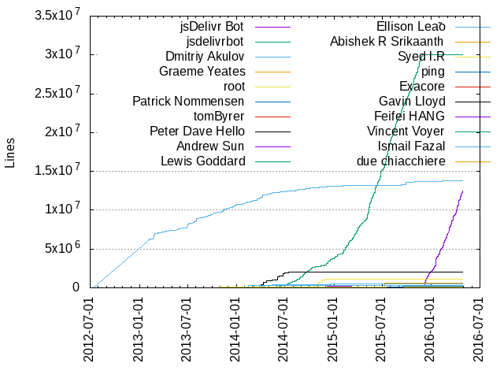
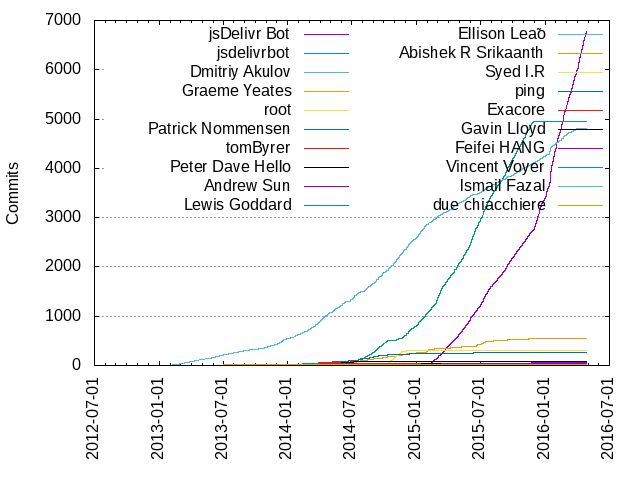

Authors
| Author | Commits (%) | + lines | - lines | First commit | Last commit | Age | Active days | # by commits |
|---|
| jsDelivr Bot | 6780 (33.41%) | 12441857 | 0 | 2015-01-04 | 2016-04-27 | 479 days, 19:35:53 | 449 | 1 |
| jsdelivrbot | 4952 (24.40%) | 30008307 | 0 | 2014-06-01 | 2015-11-30 | 546 days, 21:52:33 | 500 | 2 |
| Dmitriy Akulov | 4813 (23.72%) | 13839269 | 4647486 | 2012-07-14 | 2016-04-27 | 1383 days, 0:19:18 | 1008 | 3 |
| Graeme Yeates | 549 (2.71%) | 633064 | 4575 | 2014-02-16 | 2016-04-22 | 795 days, 13:27:07 | 259 | 4 |
| root | 305 (1.50%) | 1105798 | 1914 | 2013-12-08 | 2014-12-28 | 385 days, 1:53:07 | 68 | 5 |
| Patrick Nommensen | 262 (1.29%) | 46362 | 6405 | 2013-12-11 | 2015-09-14 | 642 days, 9:10:13 | 130 | 6 |
| tomByrer | 85 (0.42%) | 96205 | 32868 | 2013-07-25 | 2014-11-23 | 485 days, 19:04:11 | 25 | 7 |
| Peter Dave Hello | 84 (0.41%) | 2009619 | 11555 | 2014-02-16 | 2014-10-04 | 229 days, 13:07:22 | 46 | 8 |
| Andrew Sun | 54 (0.27%) | 286230 | 25460 | 2014-01-09 | 2016-02-26 | 777 days, 23:29:49 | 32 | 9 |
| Lewis Goddard | 50 (0.25%) | 4236 | 426 | 2014-02-05 | 2015-03-19 | 406 days, 20:20:10 | 11 | 10 |
| Ellison Leão | 45 (0.22%) | 476570 | 47317 | 2014-03-22 | 2014-12-21 | 273 days, 22:11:12 | 19 | 11 |
| Abishek R Srikaanth | 35 (0.17%) | 88183 | 3 | 2015-02-06 | 2015-11-19 | 286 days, 17:37:26 | 21 | 12 |
| Syed I.R | 34 (0.17%) | 70336 | 863 | 2013-10-29 | 2014-07-28 | 271 days, 18:40:56 | 9 | 13 |
| ping | 33 (0.16%) | 171166 | 10 | 2014-08-22 | 2015-10-26 | 429 days, 21:06:52 | 26 | 14 |
| Exacore | 33 (0.16%) | 19709 | 1404 | 2013-12-06 | 2015-11-08 | 702 days, 17:32:32 | 12 | 15 |
| Gavin Lloyd | 31 (0.15%) | 15563 | 401 | 2014-05-09 | 2015-01-15 | 251 days, 2:36:29 | 7 | 16 |
| Feifei HANG | 31 (0.15%) | 2089 | 4 | 2014-06-26 | 2015-03-14 | 261 days, 18:12:01 | 20 | 17 |
| Vincent Voyer | 26 (0.13%) | 68 | 8 | 2015-04-03 | 2016-04-05 | 368 days, 0:27:56 | 14 | 18 |
| Ismail Fazal | 26 (0.13%) | 254940 | 1 | 2014-01-10 | 2014-04-09 | 89 days, 8:03:35 | 6 | 19 |
| due chiacchiere | 25 (0.12%) | 36 | 15 | 2013-03-28 | 2013-12-26 | 272 days, 6:09:41 | 22 | 20 |
These didn't make it to the top: Karthik Kumar, Tom Byrer, Matthew Podwysocki, Martin Gontovnikas, getusedtoit, djprmf, Leo Horie, Brian Dukes, coderaiser, ajkj, yumeixxx, rawmaterials, Pavel Pavlov, Aymeric, Simone Dall'Angelo, danialf, Patrick Kunka, Martin Kolárik, Jon Paul, Brad Berger, Mark Garrett, Sithsu, Rodrigo de Avila, Jonathan Hornung, Harold Sánchez, Evert Meulie, Byron Ruth, lineardevon, Tomek Wytrebowicz, Isaac Kwan, Dennis Neufeld, Dan Richman, hubdotcom, Serguei Shimansky, Per Osbäck, Marco Pontili, John Wright, Jack Dalton, Heinrich Goebl, Dhruva Ray, Chris Maurer, Brett Willemsen, meddle, Will Dady, Nolan Lawson, Maxmert, Kcchouette, Jonatas Walker, thednp, megawac, john gravois, Stefan Andres Charsley, Patrick Arlt, Magnus Burton, Luigi Pinca, Erick Ruiz de Chavez, Edwin Martin, Cody Lundquist, misantronic, leonardo lima, Wes Cossick, Sean Whalen, Sascha Droste, Osman Nuri Okumus, Lars Kappert, Eric Buckley, Denis Ryabov, Corey Butler, Chris Simpkins, Asim Ihsan, YoungCat CHEN, William Lindner, Wan Qi Chen, Vousk-prod, Thinegan Ratnam, Saumya Majumder, Roberto Frenna, Ricardo Polo, Michael Levy, Matthieu Dumont, Marcos Lin, Kijin Sung, Kevin Locke, Karl Horky, Justin Dearing, Joel Mueller, Jan-Pieter Zoutewelle, Don Naegely, David Koes, Cheon Sangwon, Björn Stein, Aviel Fedida, Arun Michael Dsouza, Alexandr Kondrashov, xavierfaucon, styloa, mrkindy, mparaiso, lithiumjake, kenwheeler, clutchwave, anshumanf, Yuusaku Miyazaki, Xavier Grand, Uri Shaked, Ulrich Pogson, Tyler Long, Soundara Pandian, Sahat Yalkabov, RoberTu, Rene Zbinden, Paul O’Shannessy, Oskar Risberg, Mark Carver, Ilya Zverev, FatBat, Dirk Lüth, Ariel Flesler, Aquei, ymatuhin, vvo, puscas, ojasray, exacore, edgardleal, apeckham, Yuriy Nemtsov, Tsutomu Kawamura, Thomas Deinhamer, Tanner Ryan, Stolz, SirTimmyTimbit, Sarun Rattanasiri, Samuel Maudo, Roman, Riley Shaw, P.J. Onori, Osman Nuri Okumuş, Oleg Kiriljuk, Nicola Fontana, Nicholas Bollweg, Matthew Amato, MKody, Limon Monte, Kavin, Jérôme Charron, Juan Carlos Lara, Johannes Mittendorfer, Jamie, Jacob Turner, Ivan Malopinsky, Hakan ERSU, Evan You, Esdras Eduardo, Edison Chuang, David Riccitelli, Damien Sorel, Craig Michael Thompson, Chris Sainty, Bao Ngo, Attila Oláh, wsmckenz, unknown, rubenpa, rragan, moay, klml, jgravois, jacobscarter, garybond, blinkythebear, ashis, anyjser, andre, aFarkas, Wladimir Schmidt, Tyler Hughes, Shad Storhaug, Sei Kan, RubaXa, Roman Pominov, Robert Sim, Philipp Thuerwaechter, Neha Kadam, Morten Houmøller Nygaard, Mike Feldmeier, Matías Fidemraizer, Matthew Stolley, Matias Fidemraizer, Mark Atia, Marcin Lulek, Maksim Chemerisuk, Lucas Mundim, Lee Byron, Laurens Rietveld, Kit Cambridge, Kenshin The Battōsai (Sudarsan Balaji), Kamisama, José Quintana, Josh Mock, Jeremy Hull, Jeffrey Turner, JC Hulce, Ionut Colceriu, IACM, Heinrich Fenkart, Gábor Berkesi, Greg, Geovanni Perez, George Erickson, Francisco Presencia, Flávio Ribeiro, Evgeniy Malyarov, Eugene Kashida, EragonJ (E.J.), Elisamuel Resto, Dennis14e, Dan Dascalescu, Christian Eikermann, Chris Kim, Charlike Mike Reagent, Bryce Kahle, Brando Meniconi, Benjamin Tan, Ben Plum, Arron Mabrey, Arnaud Leyder, Antonio Stoilkov, Anthon Pang, trnder, tiwence, taijiweb, smasher164, sbwp, sancospi, orweinberger, nickpolet, nafribs, mokazhar, medimatrix, ldaehyeon, konstantin, kiran, idleberg, hfjallemark, hagenbruch, finom, ethanpil, englishextra, egilkh, drugsmouse, bnu, azproduction, austin brown, asaph, Zudd, Zac Morris, Wasif Hasan Baig, Urmil Parikh, Undefined, Tom Vincent, Todd-Werelius, Ting Yang, Thodoris Greasidis, Szymon Nowak, Supriyo Roy, SirenHound, Simon Wielens, Simon Thorpe, Simeon Cheeseman, Simeon, Shaw, Sebastian Pekarek, Scott Sauyet, Sarunas, Sam Denton, Sahil Muthoo, Ran Cohen, Radek Stangel, PunKeel, Prayag Verma, Pratinav Bagla, Pierre-Henri Lavigne, Petr Vostřel, Petka Antonov, Osman Nuri kOkumuş, Nikita Litvin, Nicolas Fortin, Montana Flynn, Mohammad Younes, Mike Lee, Mike Lambert, Meownosaurus, Matthias Pfefferle, Matthew Wagerfield, Matt Wisniewski, Matt Smith, Matt Jordan, Mathias Rangel Wulff, Mat, Martin Wendt, Marko Mikulicic, Marcin Warpechowski, Marcin Mielnicki, Manos, Maik Riechert, Li Zhe, Leonardo Gatica, Kevin Brown, Ken Wheeler, Keith Blaha, Kashif Iqbal Khan, Justin, Jurnell Cockhren, Juga Paazmaya, Jozef Butko, Jonathan Damon, John-David Dalton, Jevin Maltais, Jelle Kralt, Jean-Francois Moy, Jason Hicks, James Wyse, Jabran Rafique, Hidenari Nozaki, Greg Walden, Glauco Custódio, Garry Polley, G, Fredrik Forsmo, Filipe Dias, Fez Vrasta, Felix Arntz, Federico, Eugene Pankov, Erman, EragonJ, Emanuele "ToX" Toscano, Eisbehr, Edgar Villarreal, Dmitry, Dimitri Rosenberg, Devon Freitas, Dem Pilafian, David Duponchel, Daniel Mester Pirttijärvi, Claudio Anibal Barahona Flores, Christoph Burgmer, Changwoo Park, Carl Sednaoui, Bryan Braun, Bram Wubs, BitsyCode, Benjamin Roth, Ben Chauvette, Ben, Aurimas, Artur-A, Aranjedeath, Anton Zhiyanov, Anton Wilhelm, Andrew Trusty, Alexei Zaviruha, Alexandre Stanislawski, Alexander Madyankin, Alexander Lamaison, Alex Kit, Admiralsmaster, Aditya Manohar, Adam Wardecki, Aaron Raimist, Aaron Peckham, Łukasz Wiktor, xles, witold.szpur, web777, topvd, thybag, sihu, sielski, richardba, remixz, pnommensen, piccaso, peteyork, perosb, osxi, nstavrakakis, niutech, nickpierpoint, minznerjosh, mikebe11, marcosarce, maT7ew, lolmaus, labsvisual, krjoseph, kemadz, kazuya kawaguchi, karololszak, jtenner, jon4888, jjbenson, jehna, gnuzilla, gdelprete, fabrizio.fortino, ewino, evilangelmd, diego.yungh, devin ivy, developermj, dariel, damianavila, d4Mn3d, clickslide, balmeras, asyty, admiralsmaster, Zalmoxisus, Zak Groner, Yasyf Mohamedali, Yarmo Mackenbach, Xotic750, Wessel Grift, WebcomOps, Wanasit Tanakitrungruang, W.Y, Vitaly Puzrin, VinuRaj, Vincent Garreau, Victoria French, Victor Lara, Valentin Vasilyev, Typhoon, Torsten Rehn, Tomasz Dyl, Tom MacWright, Tom Jenkinson, Tom Fuertes, Toilal, Tobias Zeumer, Tiwence Mawill, Ting-y, Thomas Strobl, Thiago Ganzarolli, Teoh Han Hui, Taye A, Tanner Filip, TalhaAzim, Szépe Viktor, Sylvain Utard, Sylvain UTARD, Sylvain, Syed Irfaq R, Stoyan, Stijn Herreman, Steve Senbud, Steve, Stanislas Ormières, Son Chan Uk, Skymil, Simon Schoenenberger, SimeonC, Seoester, Sebastian Wallin, SeanPollock, Sean Lip, Sean C Davis, Sean, Scott Humes, Sandy Duan, Samuel Hodge, Sam Thorogood, Sam Eaton, RyanC, Rune Stromsted, Roman Teplov, Rodney Rehm, Rob Loach, Ritesh Kumar, Rickard Nilsson, Richard Davey, Renzo Cortez, Randy Edmunds, Philipp Wendler, Peter Bengtsson, Pete Surawatanapong, Per Osbeck, Paweł Zmarzły, Pawel Raszewski, Paulo Costa, Patrick Samson, Owen Versteeg, Oliver Welter, Oleg Solomka, Oleg Anashkin, Nikolche Mihajlovski, Nicolas Gryman, Nick, Nic Jansma, Nhat Nguyen, Nemanja Stanarevic, MrSaints, Mota Pc, Mosciatti S, Moritz Emanuel Beber, Mohammad Hossein Rashno, Mihai Ionut Vilcu, Michal Rusina, Michael Stenta, Michael Spector, Michael Krause, Mengxuan Xia, Maximilian Heinz, MaxMillion, Max, Matúš Brliť, Matus Brlit, Matthieu DUMONT, Matt Walker, Mathew Tyler, Martin@MBP, Martin Sudolsky, Martin, Marsup, Mark Beeson, Marco, Mads Sülau Valstorp Jørgensen, Mads Sülau Jørgensen, MOTA PC, Lukas Elmer, Lukas, Luckner Jr. Jean-Baptiste, Lucas Oliveira, Lorenz Leutgeb, Logan Rosen, Lipis, Leonardo Santos, Leo Lou, Leandro Moreira, Laurent G, Laurent Destailleur, Landon Schropp, Labidi Aymen, KwonH, Krzysztof Kosz, Kristofer Joseph, Krishna Kishore Shetty, Kevin Wake, Keval Bhatt, Kernc, Keith Peters, Karl-Erik Rønsen, KahWee Teng, Jun, Julien Vernet, Julian Lloyd, Juan Riquelme, Joseph McElroy, Jordane, Jonas Rabbe, Jon Ege Ronnenberg, Joe Smith, Joe Hare, Jesse Luoto, Jerome Touffe-Blin, Jeremy Benoist, Jeremy BENOIST, Jason Dobry, Jack Bowman, JTK, Ire Aderinokun, Ignacio del Valle Alles, Hsiaoming Yang, Henning Koch, Harold Sanchez, Hamilton Chapman, HIROKAZU uchiyama, Guy Bedford, Gustavo Veloso, Gustavo Barbosa, Gregg Van Hove, Greg Meyer, Golmote, Girisha Kundapur, Gianluca Guarini, Giancarlo Gomez, Gerlando Termini, Geoff Cox, Gabin Aureche, Gabin, Fred Chasen, Francesc Busquets, Félix Saparelli, Feross Aboukhadijeh, Faisal Salman, Fabricio C Zuardi, Estevão Soares dos Santos, Eser Ozvataf, Eric Wafford, Eric W. Burns, Eric Capps, Enrique Coslado Santibáñez, Elvin Luff, Ellison Leão, Eduard Mann, Dr. Oleg Kiriljuk, Donghwan Kim, Dominic Rico-Gomez, Diego Rodríguez Baquero, Diego Rodríguez B, Dejan Stojanovic, Dawid Kraczkowski, David Mulder, David Chambers, David Bau, Dariel Noel, Danny Cork, Daniel Kopka, Danial Farid, Dan Tao, Dan Grossman, Damon Oehlman, Cyril Kyburz, Coding Friend, ClassCoder, Christopher Hiller, Christian Vuerings, Christian Foellmann, Chris Thielen, Chris Maloney, Calvin Froedge, Bruno Torres, Brad Dougherty, Bitdeli Chef, Billy Moon, Bill Bryant, Bernhard Mäser, Benji Mauer, Benjamin Gruenbaum, Ben Ma, Baris Aydinoglu, Barin Britva, Aurelio De Rosa, Aternus, Ashis Rai, Arturs Sosins, Arthur Parkhisenko, Arpit Bhayani, Ariel Krakowski, ApfelUser, Andy Vaughn, Andrey Gubanov, Andrey Degtyaruk, Andrey 'lomaus' Mikhaylov, Andrew Biddinger, Anderson de Oliveira, AlohafromHell, Ali.Debugger, Ali.Dbg, Alexandr, Alex Pineda, Alex Nicksay, Alex MacArthur, Alex Beauchemin, Aleksandra Nowak, Alberto, Akurganow, Adrien be, Aaron, Aamir Afridi, (Andy) James Andrew Vaughn
Only top 20 authors shown
Only top 20 authors shown
| Month | Author | Commits (%) | Next top 5 | Number of authors |
|---|
| 2016-04 | jsDelivr Bot | 806 (92.96% of 867) | Dmitriy Akulov, Ricardo Polo, Graeme Yeates, David Koes, Limon Monte | 33 |
| 2016-03 | jsDelivr Bot | 768 (80.93% of 949) | Dmitriy Akulov, Vincent Voyer, Graeme Yeates, YoungCat CHEN, Arron Mabrey | 34 |
| 2016-02 | jsDelivr Bot | 815 (78.67% of 1036) | Dmitriy Akulov, Oleg Kiriljuk, sbwp, Vousk-prod, Ting Yang | 39 |
| 2016-01 | jsDelivr Bot | 1005 (75.79% of 1326) | Dmitriy Akulov, Jonathan Hornung, Kcchouette, anyjser, YoungCat CHEN | 46 |
| 2015-12 | jsDelivr Bot | 629 (76.89% of 818) | Dmitriy Akulov, Kcchouette, Jack Dalton, Cheon Sangwon, nickpolet | 44 |
| 2015-11 | jsdelivrbot | 371 (44.65% of 831) | jsDelivr Bot, Dmitriy Akulov, Vincent Voyer, Jack Dalton, Andrew Sun | 39 |
| 2015-10 | jsdelivrbot | 411 (44.77% of 918) | jsDelivr Bot, Dmitriy Akulov, yumeixxx, Graeme Yeates, ping | 43 |
| 2015-09 | jsdelivrbot | 420 (44.68% of 940) | jsDelivr Bot, Dmitriy Akulov, Graeme Yeates, ping, Jonatas Walker | 45 |
| 2015-08 | jsdelivrbot | 328 (42.99% of 763) | jsDelivr Bot, Dmitriy Akulov, Graeme Yeates, Mark Carver, Tyler Hughes | 44 |
| 2015-07 | jsdelivrbot | 495 (42.49% of 1165) | jsDelivr Bot, Dmitriy Akulov, Graeme Yeates, Dan Richman, Patrick Arlt | 44 |
| 2015-06 | jsdelivrbot | 518 (49.71% of 1042) | jsDelivr Bot, Dmitriy Akulov, Graeme Yeates, Abishek R Srikaanth, Patrick Nommensen | 38 |
| 2015-05 | jsdelivrbot | 364 (42.28% of 861) | jsDelivr Bot, Dmitriy Akulov, Graeme Yeates, Patrick Nommensen, Karthik Kumar | 46 |
| 2015-04 | jsdelivrbot | 309 (38.15% of 810) | jsDelivr Bot, Dmitriy Akulov, Graeme Yeates, hubdotcom, thednp | 48 |
| 2015-03 | jsdelivrbot | 415 (47.81% of 868) | jsDelivr Bot, Dmitriy Akulov, Graeme Yeates, Andrew Sun, Per Osbäck | 45 |
| 2015-02 | jsdelivrbot | 270 (40.06% of 674) | jsDelivr Bot, Dmitriy Akulov, Graeme Yeates, Abishek R Srikaanth, xavierfaucon | 48 |
| 2015-01 | Dmitriy Akulov | 281 (44.39% of 633) | jsdelivrbot, Graeme Yeates, lineardevon, jsDelivr Bot, Tom Byrer | 44 |
| 2014-12 | Dmitriy Akulov | 236 (45.83% of 515) | jsdelivrbot, Graeme Yeates, root, Tom Byrer, aFarkas | 34 |
| 2014-11 | Dmitriy Akulov | 259 (43.24% of 599) | root, jsdelivrbot, Graeme Yeates, Feifei HANG, Patrick Nommensen | 34 |
| 2014-10 | Dmitriy Akulov | 219 (40.18% of 545) | root, jsdelivrbot, Graeme Yeates, Patrick Nommensen, Peter Dave Hello | 36 |
| 2014-09 | Dmitriy Akulov | 213 (40.65% of 524) | jsdelivrbot, Patrick Nommensen, root, Graeme Yeates, tomByrer | 40 |
| 2014-08 | Dmitriy Akulov | 158 (36.74% of 430) | jsdelivrbot, Patrick Nommensen, Graeme Yeates, Pavel Pavlov, ajkj | 45 |
| 2014-07 | Dmitriy Akulov | 163 (36.30% of 449) | jsdelivrbot, Graeme Yeates, Patrick Nommensen, Peter Dave Hello, Martin Kolárik | 52 |
| 2014-06 | Dmitriy Akulov | 130 (38.58% of 337) | jsdelivrbot, Graeme Yeates, Peter Dave Hello, Patrick Nommensen, Aymeric | 52 |
| 2014-05 | Dmitriy Akulov | 143 (44.69% of 320) | Patrick Nommensen, Gavin Lloyd, Peter Dave Hello, Ellison Leão, Maxmert | 44 |
| 2014-04 | Dmitriy Akulov | 195 (42.48% of 459) | Patrick Nommensen, Peter Dave Hello, Jon Paul, djprmf, Evert Meulie | 65 |
| 2014-03 | Dmitriy Akulov | 157 (38.96% of 403) | tomByrer, Syed I.R, Ellison Leão, Simone Dall'Angelo, Peter Dave Hello | 55 |
| 2014-02 | Dmitriy Akulov | 86 (41.95% of 205) | Lewis Goddard, Ismail Fazal, tomByrer, Rodrigo de Avila, Peter Dave Hello | 27 |
| 2014-01 | Dmitriy Akulov | 86 (44.79% of 192) | rawmaterials, Karthik Kumar, Andrew Sun, Cody Lundquist, Denis Ryabov | 35 |
| 2013-12 | Dmitriy Akulov | 108 (55.10% of 196) | Exacore, Sithsu, Chris Maurer, root, Ulrich Pogson | 24 |
| 2013-11 | Dmitriy Akulov | 66 (62.26% of 106) | Thinegan Ratnam, mrkindy, Bao Ngo, hagenbruch, due chiacchiere | 22 |
| 2013-10 | Dmitriy Akulov | 39 (58.21% of 67) | Syed I.R, ojasray, danialf, Matthew Podwysocki, due chiacchiere | 12 |
| 2013-09 | Dmitriy Akulov | 26 (63.41% of 41) | Matthew Podwysocki, Dhruva Ray, due chiacchiere, Asim Ihsan, Saumya Majumder | 9 |
| 2013-08 | Dmitriy Akulov | 50 (58.14% of 86) | danialf, Matthew Podwysocki, due chiacchiere, Will Dady, Asim Ihsan | 15 |
| 2013-07 | Dmitriy Akulov | 42 (70.00% of 60) | Saumya Majumder, andre, Esdras Eduardo, due chiacchiere, tomByrer | 11 |
| 2013-06 | Dmitriy Akulov | 56 (74.67% of 75) | Martin Gontovnikas, Sean Whalen, due chiacchiere, Aymeric, lolmaus | 10 |
| 2013-05 | Dmitriy Akulov | 34 (69.39% of 49) | Martin Gontovnikas, due chiacchiere, Sean Whalen, Elisamuel Resto, Matías Fidemraizer | 6 |
| 2013-04 | Dmitriy Akulov | 45 (83.33% of 54) | Martin Gontovnikas, Anthon Pang, due chiacchiere, David Mulder | 5 |
| 2013-03 | Dmitriy Akulov | 45 (93.75% of 48) | due chiacchiere | 2 |
| 2013-02 | Dmitriy Akulov | 30 (100.00% of 30) | | 1 |
| 2012-07 | Dmitriy Akulov | 1 (100.00% of 1) | | 1 |
| Year | Author | Commits (%) | Next top 5 | Number of authors |
|---|
| 2016 | jsDelivr Bot | 3394 (81.24% of 4178) | Dmitriy Akulov, Jonathan Hornung, Graeme Yeates, Vincent Voyer, YoungCat CHEN | 125 |
| 2015 | jsdelivrbot | 4149 (40.19% of 10323) | jsDelivr Bot, Dmitriy Akulov, Graeme Yeates, Abishek R Srikaanth, Patrick Nommensen | 342 |
| 2014 | Dmitriy Akulov | 2045 (41.08% of 4978) | jsdelivrbot, root, Graeme Yeates, Patrick Nommensen, Peter Dave Hello | 282 |
| 2013 | Dmitriy Akulov | 541 (66.63% of 812) | Exacore, due chiacchiere, Martin Gontovnikas, Matthew Podwysocki, danialf | 65 |
| 2012 | Dmitriy Akulov | 1 (100.00% of 1) | | 1 |
| Domains | Total (%) |
|---|
| jsdelivr.com | 11732 (57.82%) |
|---|
| gmail.com | 3425 (16.88%) |
|---|
| hotmail.com | 3126 (15.41%) |
|---|
| nommensen.us | 200 (0.99%) |
|---|
| users.noreply.github.com | 199 (0.98%) |
|---|
| peterdavehello.org | 84 (0.41%) |
|---|
| nginx.com | 62 (0.31%) |
|---|
| xbmc.(none) | 51 (0.25%) |
|---|
| eustasy.co.uk | 40 (0.20%) |
|---|
| getused.to.it | 37 (0.18%) |
|---|